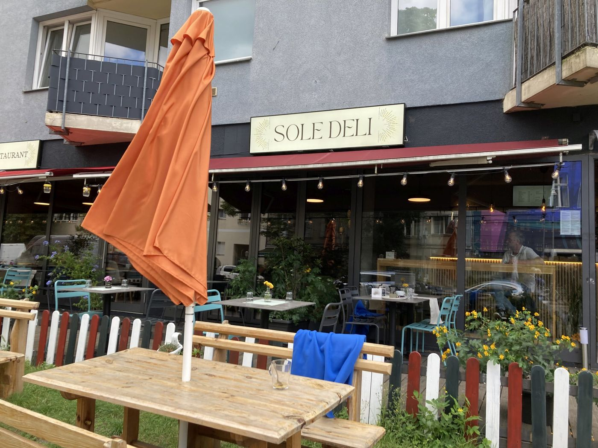
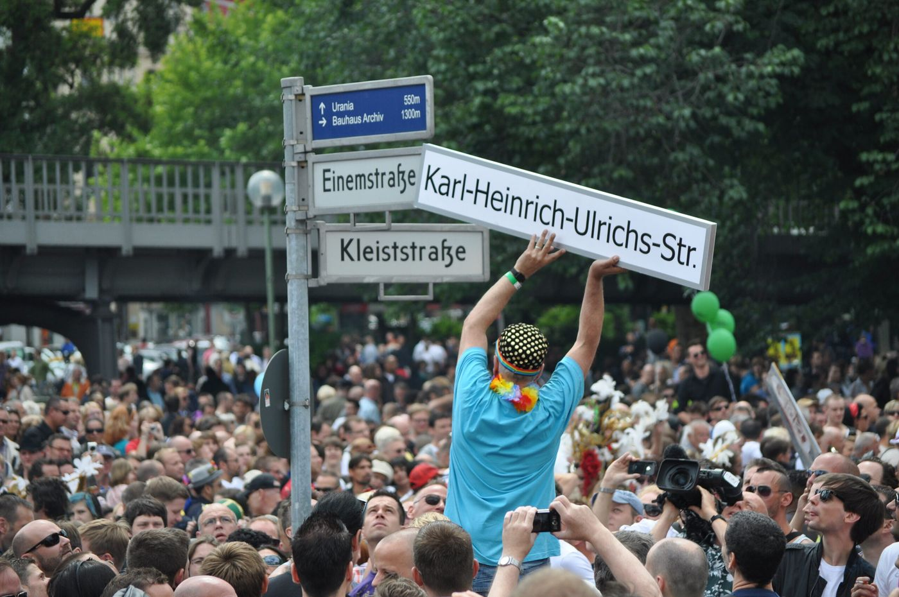

Five stops · one afternoon
You start at a museum on Lützowstraße and end on the square where the neighborhood holds its street fair. Lunch is the jog to the east. Then you cross back.
The map stays with you. Arrows move the afternoon along.
1 · Lützowstraße 73
Its German name is the Schwules Museum. It was founded in 1985, the same year as the city’s AIDS service. The collection is about 1.5 million items. The building can hold three shows at once.
In December 2025 it turns forty. The Sunday after the birthday, the door is free. Up then: Petra Gall’s photographs of Berlin’s lesbian scene, a show of queer Ukrainian art, and a history of queer movements in Germany since Stonewall.
A bust of Magnus Hirschfeld is inside. His own institute is not on this walk. More on that at the end.
“Glückwunsch! Das Schwule Museum wird 40 Jahre alt,” Dec. 4, 2025. mittendran.de
1 · same door
Between February and May 2023, someone hit the museum five times. An air rifle through the front window, the sign, and a sculpture by the door. Food smeared on the entrance while the museum was open. A fire extinguisher emptied on the facade. Water balloons in the lobby, twice.
Staff also found anti-queer stickers, far-right stickers in the bathrooms, blows on the glass, abuse by phone and in the guest book. The insurer asked whether a window full of bullet holes needed replacing, since the pane still held. The museum paid for the sign, the sculpture, and the cleaning.
Press note signed by Jan Künemund, mino Künze, and Julia Heuser, Aug. 13, 2023. mittendran.de

2 · Zietenstraße
Sole Deli is a block east of the straight line, which is why the map bends. Mediterranean, tables outside, open in this piece from 9 to 6. Banana bread is 7.50 euros. There is a vegan breakfast plate, and the kitchen can do gluten-free and halal.
Eat here. The next two stops are heavier.
“Restaurant SOLE DELI,” Sept. 16, 2025. mittendran.de
3 · Kurfürstenstraße 130
Berliner Aids-Hilfe has been here, in one form or another, since 1985. Early on, people called AIDS the gay plague. A lot of the sick hid it. Nonsense traveled faster than medicine.
The office tests, counsels, and runs groups. Lea Susanna, who has lived with HIV for nineteen years, says that with treatment she cannot pass the virus on. In Germany, most people who know their status and stay on medication reach that point. In 2021, 650,000 people worldwide still died of it, mostly in Africa and Asia.
The year’s slogan was one English word: Equalize.
World AIDS Day piece, Dec. 1, 2022. mittendran.de
4 · Nollendorfplatz
For one weekend in July 2023 the lesbian and gay street fair took over the square for the 29th time. The motto was “equal rights for unequals, worldwide.” Motzstraße, Eisenacher Straße, Fuggerstraße, and Kalckreuthstraße become the fairground, about five acres of it.
The piece calls it the biggest gathering of its kind in Europe, and says the crowd has run past 350,000. Six stages. It goes until 11 on Saturday and 9 on Sunday. The photograph in the article is from the year before.
“Gleiche Rechte für Ungleiche — weltweit!,” July 10, 2023. mittendran.de

5 · the street into the square
Einemstraße is now Karl-Heinrich-Ulrichs-Straße. Ulrichs was a lawyer. In the 1860s he said, in public and in print, that love between men was inborn. He was decades ahead of the better-known Magnus Hirschfeld. In the picture, someone holds the new sign over the old one while the square is packed.
The article ties the renaming to a layer in a Berlin history app, made with the Gay Museum: about seventy queer places, east and west, from before the Wall. Its last line is the one to keep. Queer history is also the history of democracy.
“In der Berlin-Presse war es kurz erwähnt,” Nov. 30, 2023. mittendran.de
Not on the map
Magnus Hirschfeld opened the Institute for Sexual Science in 1919, in a villa in the Tiergarten. It was a clinic, a library, and a shelter, at a time when sex between men was a crime under Paragraph 175. In the first days of May 1933, Nazi students looted it. On May 10 the books were burned in the square by the opera house.
What remains nearby is a plain plaque, put up in 1994, and the bust back at the museum. This afternoon stays south of Lützowstraße.
“Durch Wissenschaft zur Gerechtigkeit,” April 19, 2023. mittendran.de